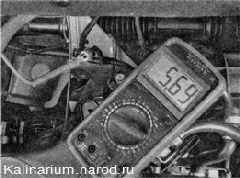

Датчик положения дроссельной заслонкипроверка и замена
Для выполнения работы потребуются:
мультиметр (в режиме вольтметра и омметра);
— отрезки проводов.
Проверка
1. Подготавливаем автомобиль к выполнению работы.
2. Снимаем декоративную накладку двигателя.
3. Освобождаем фиксатор колодки жгута проводов и отсоединяем колодку отдатчика положения дроссельной заслонки.
4. Подсоединяем «минусовой» щуп вольтметра к «массе» двигателя.
5. Включив зажигание, подсоединяем «плюсовой» щуп вольтметра к выводу А колодки жгута проводов (нумерация выводов нанесена на колодке) и измеряем напряжение питания.
Напряжение питания на выводе А колодки должно быть около 5 В. Если напряжение не поступает на колодку или оно меньше 5 В, значит, неисправна цепь питания или неисправен ЭБУ.
По окончании измерения напряжения выключайте зажигание.
Снятие
1. Крестовой отверткой отворачиваем два винта крепления регулятора холостого хода к корпусу дроссельной заслонки.
2. Снимаем датчик положения дроссельной заслонки с оси заслонки. Соединение датчика с корпусом дроссельной заслонки уплотнено поролоновым кольцом.

Совет
Убедиться в неисправности датчика положения дроссельной - заслонки можно, заменив его заведомо исправным.
Установка
1. Надеваем датчик на ось привода дроссельной заслонки.
У правильно установленного датчика выводы должны быть направлены в сторону перегородки моторного отсека.
2. Удерживая датчик в положении, при котором отверстия под винты крепления совмещены с резьбовыми отверстиями в корпусе дроссельной заслонки, поворачиваем сектор привода дроссельной заслонки до упора.
Если это невозможно выполнить без поворота корпуса датчика, значит, датчик установлен неправильно. Следует снять датчик с оси дроссельной заслонки и установить в ином положении.
3. Убедившись, что датчик установлен правильно, заворачиваем винты его крепления и присоединяем колодку жгута проводов.